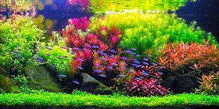
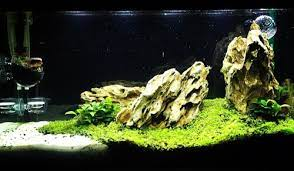
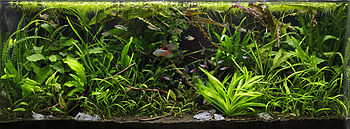

Los acuarios de estilo holandes incluyen múltiples especies de plantas, con hojas de distintos colores, medidas y texturas que imitan un jardín en flor. Este estilo se desarrolló en los Países Bajos en la década de 1930, cuando comenzaron a estar disponibles los equipos comerciales para acuarios de agua dulce. Enfatiza el papel de las plantas mediante su ubicación en terrazas de alturas diferentes y frecuentemente prescinde de rocas o madera. Las líneas de plantas que corren de derecha a izquierda se conocen como «calles neerlandesas» Pese a los muy diversos tipos de plantas que se emplean, es frecuente ver agrupaciones de plantas pulcramente recortadas con finos follajes plumosos, como la Limnophila aquatica o varias especies de Hygrophila, así como los tonos rojos de Alternanthera reineckii o Ammania gracilis. Más del 80% del suelo del acuario está cubierto con plantas, y poco o ningún substrato queda visible. Las plantas de mayor altura se sitúan en la parte posterior y servían originariamente para esconder el voluminoso equipamiento de la parte trasera del tanque.
La palabra Iwagumi (岩組?) significa en japonés «formación rocosa» y sirve para describir un diseño en el que las piedras juegan el papel principal. En el estilo Iwagumi, cada piedra tiene un nombre y una función concreta. Las rocas proporcionan la estructura básica, con una geometría que incluye generalmente tres piedras principales, una más grande y dos más pequeñas, aunque pueden usarse también rocas adicionales. La Oyaishi (親石?), o piedra principal, se coloca ligeramente descentrada y las Soeishi (添石?), o piedras acompañantes, se agrupan en su proximidad, mientras que las Fukuseki (副石?), o piedras secundarias, ocupan posiciones subordinadas.Se considera especialmente importante la ubicación del punto focal de la composición, que se establece en gran medida por la ubicación asimétrica de la piedra Oyaishi
Algunos acuaristas referencian también un estilo «jungla » o «jungla salvaje» diferente tanto del estilo neerlandés como del estilo naturalista. Su característica fundamental es permitir que las plantas adopten un aspecto natural y exento de podas. Los acuarios de tipo jungla suelen mostrar pocos elementos sólidos (madera o rocas) y escaso espacio abierto. Las plantas de hojas robustas y formas más toscas, como Echinodorus bleheri, proporcionan un aspecto salvaje a la composición. A diferencia del estilo naturalista, el estilo jungla no sigue líneas limpias, ni emplea texturas delicadas. Se imita el efecto del dosel arbóreo mediante la combinación de sustratos oscuros, plantas altas que crecen hasta la superficie y plantas flotantes que bloquean la luz ofreciendo un aspecto tamizado. Otras plantas frecuentes en acuarios de tipo jungla son Microsorum pteropus, Bolbitis heudelotii, Limnobium laevigatum y diversas especies de los géneros Sagittaria, Vallisneria, Crinum , Aponogeton, Echinodorus, Hygrophila o Anubia.
